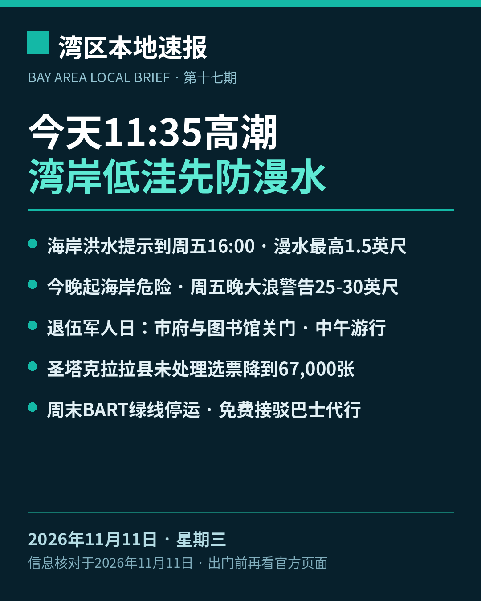

title: 今天11:35高潮，湾岸低洼先防漫水 date: 2026-11-11 series: baylocal author: Guangyi Zhao

《湾区本地速报》第十七期，2026年11月11日，星期三，五条本地新闻：
主打·天气与安全：国家气象局（NWS）今天凌晨 0 点 14 分发布的海岸危险通告：旧金山与旧金山湾岸分区的海岸洪水提示持续到 11月13日（周五）下午 4 点，低洼近岸与潮汐水道一带漫水最高可能高出地面 1.5 英尺，可能造成低洼设施被淹、个别道路关闭与海岸侵蚀。今天上午 11 点 35 分，旧金山潮位站高潮预计 7.2 英尺、高出正常 1.4 英尺；明天（11月12日）12 点 10 分为 7.1 英尺，周五 12 点 49 分为 7.3 英尺。今晚 9 点起海岸危险提示生效到周五傍晚 6 点（碎浪 15 到 20 英尺、偷袭浪与离岸流风险上升）；周五傍晚 6 点到周日凌晨 4 点大浪警告，危险大碎浪 25 到 30 英尺。官方提醒：不要绕过路障、不要开车穿过深浅不明的积水；不要下水，远离防波堤、码头与礁石，永远不要背对大海。
市政：今天是退伍军人日。圣何塞市政厅与市府办公室今天关门，公共安全与公用事业服务照常运行。细项：圣何塞公共图书馆所有分馆关门（电子书等线上资源照常）；311 客服中心关门、由接听服务代接；动物管理中心关门；机场行政办公室关门；发展服务许可证中心关门、网上许可照常；San José Clean Energy 客服中心今天照常开放。学区方面，坎贝尔联合高中学区（Branham、Leigh 等高中）今天停课；各学区安排不同，请以本校通知为准。
社区大事：圣何塞第 108 届退伍军人日游行今天在市中心举行：上午 11 点在 Plaza de Cesar Chavez 检阅台前先行开幕仪式，中午 12 点游行从 Santa Clara 街与 Almaden 大道出发，沿 Santa Clara 街向东、转 Market 街向南穿过广场，终点为 San Carlos 街与 Market 街口，全程约 1 英里。主办方称其为北加州最大的退伍军人日游行。市中心沿线街道在游行前关闭，去观看请早到、尽量坐公共交通。
计票更新：圣塔克拉拉县选务处昨天下午 5 点更新未处理选票估计：全县还没处理完的选票估计 67,000 张，较前一天（11月9日下午 5 点）的 136,550 张减少 69,550 张。其中选举日及之前收到的邮寄票 39,000 张、选举日后收到的 17,300 张、附条件登记票 6,500 张、临时票 400 张，另有 3,800 张卡在签名核验——按加州选举法第 3020 条，签名缺失或不符的选民可在选举日后 22 天内提交核验声明。县选务处预告今天（11月11日）下午 5 点前还有一次结果更新。以上均为估计数，结果未经认证。
交通预告：BART 官方通告：为安装新列车控制系统，本周六、周日（11月14、15日）24th Street Mission 站至 Daly City 站之间没有列车，绿线整个周末停运。免费接驳巴士代行：SamTrans 快线在两端之间直达，Muni 跳站巴士同区间并停 Glen Park 与 Balboa Park 两站（两站无列车）。红线只跑 Richmond 至 24 街，蓝线只跑 Dublin 至 24 街，Daly City 至 Millbrae 每 15 分钟一班，全线发车时刻最多提前或推后 3 分钟，24 街以南出行延误可达 30 分钟。南湾乘客去旧金山可乘橙线到 Bay Fair 换蓝线；周六早上 5 点 40 分、周日早上 7 点 40 分各有一班额外橙线车从 Berryessa 发车。
来源：国家气象局海岸危险通告 CFWMTR（2026-11-11 00:14） · 圣何塞市市政经理月讯（2026-11-04） · 圣塔克拉拉县选务处未处理选票估计 · BART 周末停运与接驳通告 · 圣何塞退伍军人日游行主办方
数字证据说明：本期五条中四条为 A 级（官方原文：国家气象局通告、圣何塞市府、县选务处、BART，核对日期 2026-11-11），游行条为 B 级（主办方页面与图书馆口径、Mercury News 交叉一致）；高潮数值以通告正文为准（今天 7.2 英尺/+1.4 英尺）；选票数字为选务处估计口径、结果未认证，稿中已注明；大浪警告为预报口径。
《湾区本地速报》为《代码与诗篇》新闻矩阵第 8 档，每日早上更新。播报版（音频/视频）同日发布于 YouTube「Ezra Daily 每日速报」。© 2026 Guangyi Zhao